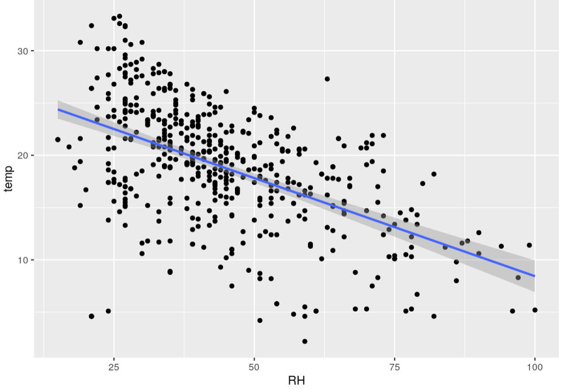
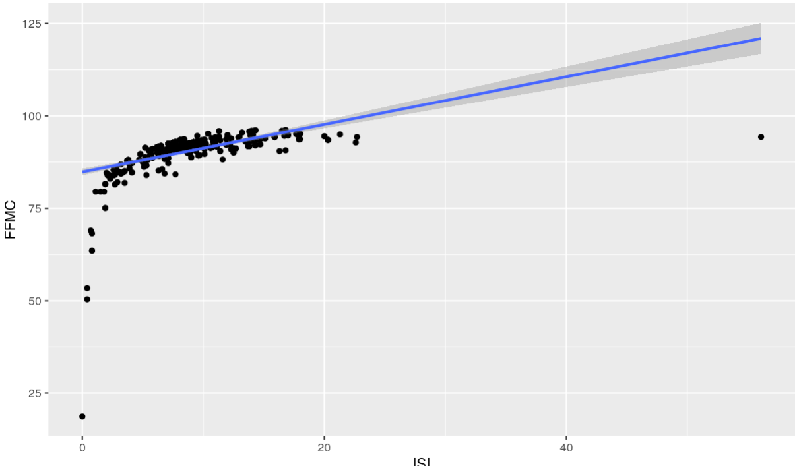

For hypothesis one, we want to know the relationship between DC and temperature. Due to the Canadian Forest Fire Weather Index System, DC is a drought code, which presents how dry the area is. The higher the drought code, the more extreme the drought is. Our first step is to graph a scatter plot with a smooth line(Fig 3). We can see from the scatter plot that there is a small cluster in the lower left corner and a big cluster in the upper right corner. Both clusters’ centers are not close to the positive line, so we colored the scatterplot by month. We can see that the smaller cluster in the lower left corner is green, and the larger cluster in the upper right is pink (Fig 4). The green color presents the spring months, such as February and March. The pink color presents the fall months, such as August and September. We can see from Fig 4 that there are more pink observations than the other colors. Therefore, we made a frequency table for the month’s observation (Table 3). It is clear that August and September have more observations than the rest of the months. 2+15+1+9+20+54+9+2+17+32= 161 < 172 (September) < 184 (August). Then we remake the scatter plot for temperature and drought code by monthly instead. From Fig 5, we can see that each month does not have a strong relationship between temperature and drought code. An obvious observation is that August has a wide range of temperatures, from 5 to 35 degrees, and the slope of the line is flat. In summary, there is no strong evidence that as temperature increases, the drought code increases. It is possible that drought codes change to seasonal changes.
One of the hypotheses that we would be exploring with the variables of our data is whether higher temperatures can lead to lower humidity levels when looking at the two variables: Relative Humidity and Temperature. After conducting this, we found that Relative Humidity in our x-axis and Temperature in the y-axis of our graph leads to a negative linear relationship between the variables. The results showed that as relative humidity increases, temperature increases. This would be vise-versa that as temperature increases, relative humidity decreases, as we see by the inverse relationship between these two variables, which proves our initial hypothesis to be true.

In our third hypothesis, we try to analyze whether a greater Initial Spread Index (ISI) leads to a greater Fine Fuel Moisture Code (FFMC). Using these two numeric variables and conducting the same test for seeing the relationship between relative humidity and temperature, we were able to see a fitted positive linear correlation when using ISI as our x-axis and FFMC as our y-axis. This fitted correlation is part of what seems to be an exponential increase relationship between the two variables, with a few significant outliers. Nevertheless, our hypothesis continues to be proved by the linear regression model of these two variables.
